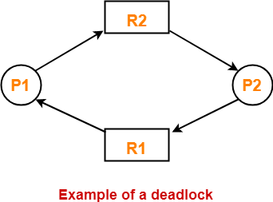

What is deadlock?
Deadlock is when a group of processes are all stuck, each waiting for another one in the group to do something.

Four conditions
Deadlock can only happen if four conditions are met:
- Mutual exclusion: only one process can use a resource at a time.
- Hold-and-wait: a process can keep what it has while asking for more.
- No preemption: the system can’t force a process to give a resource back. Only the process can release it.
- Circular wait: processes form a loop where each one needs something the next one has.
Handling deadlock
- Ostrich algorithm: ignore the problem and hope it never happens.
- Detection and recovery: let deadlock happen, notice it, then fix it, for example by ending a process.
- Avoidance: the system checks each request first and only agrees if it can’t lead to deadlock. The banker’s algorithm does this.
- Prevention: design the system so at least one of the four conditions can never be true.
Sources
- Tanenbaum, A. S., & Bos, H. (2014). Modern Operating Systems (4th ed.). Pearson.
- Deadlock (Wikipedia)
- Banker's algorithm (Wikipedia)
- Diagram: Deadlock in OS: Conditions for Deadlock (Gate Vidyalay)